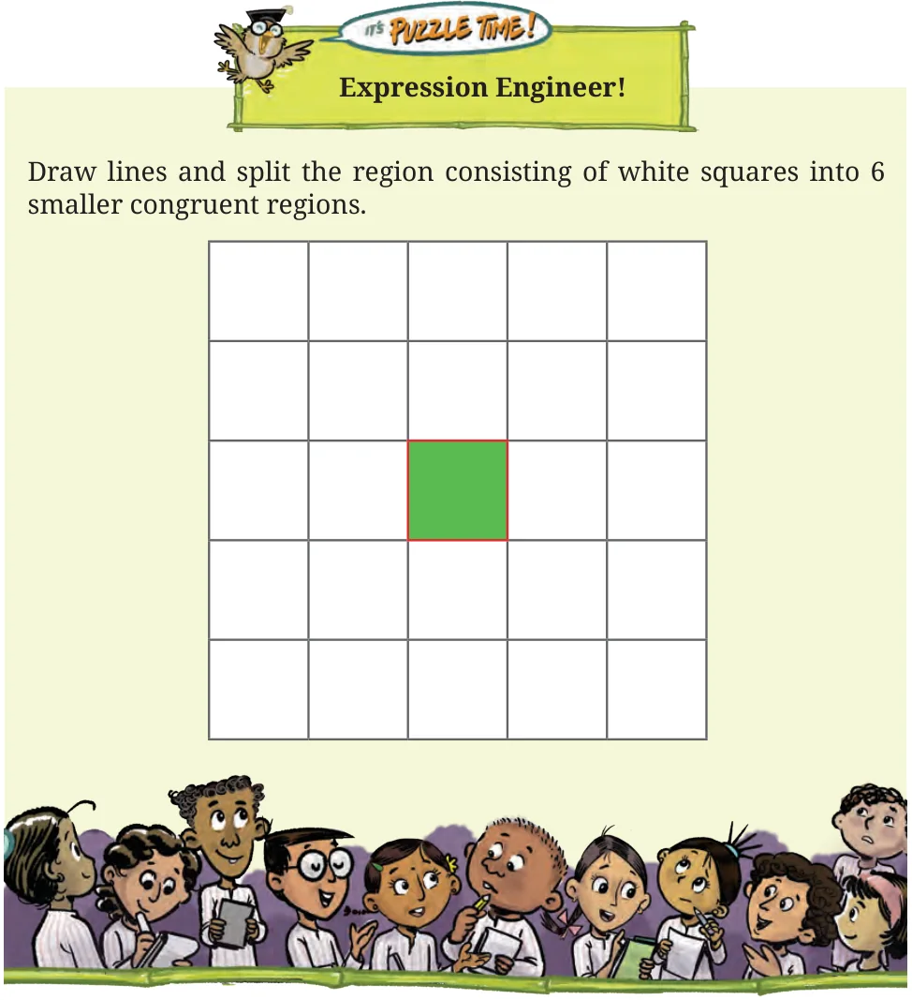

- Figures that have the same shape and size are said to be congruent. These figures can be superimposed so that one fits exactly over the other.
- While verifying congruence, a figure can be rotated or flipped to make it fit exactly over the other figure via superimposition.
- When two triangles have the same sidelengths, we say that the SSS (Side Side Side) condition is satisfied. The SSS condition guarantees congruence.
- When two sides and the included angle of one triangle are equal to the two sides and the included angle of another triangle, we say that the SAS (Side Angle Side) condition is satisfied. The SAS condition also guarantees congruence.
- When two angles and the included side of one triangle are equal to the two angles and the included side of another triangle, we say that the ASA (Angle Side Angle) condition is satisfied. The ASA condition guarantees congruence. Congruence holds even if the side is not included between the angles — AAS (Angle Angle Side) condition.
- In a right-angled triangle, the side opposite to the right angle is called the hypotenuse.
- When a side and a hypotenuse of a right-angled triangle are equal to a side and the hypotenuse of another right-angled triangle, we say that the RHS (Right Hypotenuse Side) condition is satisfied. The RHS condition also guarantees congruence.
- Two triangles need not be congruent if two sides and a non-included angle are equal.
- In a triangle, angles opposite to equal sides are equal.
- The angles in an equilateral triangle are all 60°.
